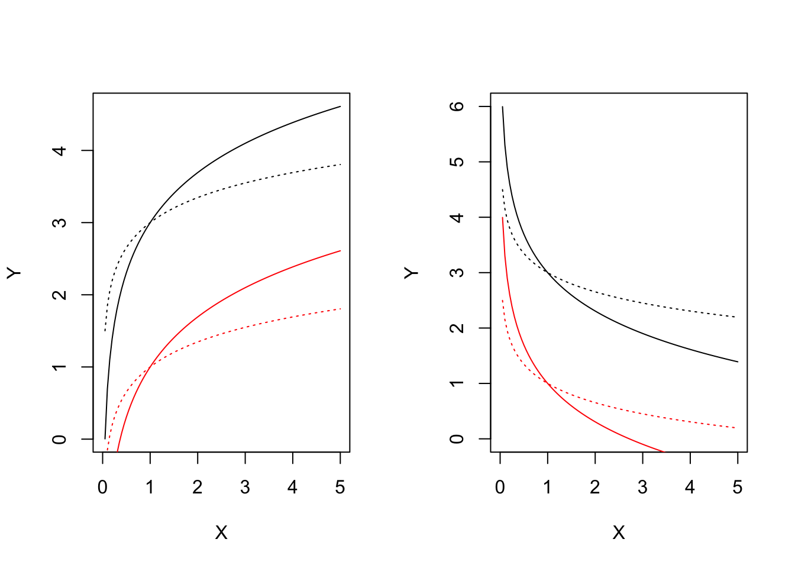

Biological phenomena are often studied by examining how a numerical variable, usually called the response (e.g., the weight or height of an organism), is affected by another variable, usually called the predictor (e.g., time or fertiliser application rate). These ‘predictor-response’ relationships are commonly described using models, which express the response as a mathematical function of the predictor. In general, a model can be written as:
\[Y = f(X, \theta)\]
where \(Y\) is the response, \(X\) is the predictor, and \(\theta\) is a collection of parameters, usually denoted by symbols, such as the letters of the Roman or Greek alphabet. The element \(f\) is the function, which determines the shape of the relationship when plotted on an x–y graph.
Because mathematical modelling plays such a central role in biology and many other scientific disciplines, biologists need to be familiar with the most important mathematical functions. More importantly, they need to be able to “read” these functions and use their parameters to describe, interpret, and quantify biological processes. With this aim in mind, I have compiled a collection of the mathematical functions most commonly encountered in biology, explaining the meaning of their parameters, with particular emphasis on their biological interpretation rather than their mathematical properties.
Curve shapes
Functions are often classified according to the shape they exhibit when plotted on an x–y graph. This approach is adopted, for example, in Ratkowsky (1990), and the classification presented below is largely based on that work.
- Polynomials
- Concave/Convex curves (no inflection)
- Sigmoidal curves
- Curves with maxima/minima
have chosen to include a relatively large number of functions, so this post is necessarily rather long. To make navigation easier, you can first inspect Figure 1 to identify the type of curve of interest and then use the links above to jump directly to the corresponding section.
Throughout this post, \(X\) denotes the predictor, \(Y\) the response, and the letters of the Roman alphabet (\(a\), \(b\), \(c\), …) the model parameters, which determine the shape of the function.
Polynomials
Polynomials form a class of their own because their flexible shapes allow them to approximate a wide variety of biological processes, at least over a restricted range of the predictor. The mathematical tractation is very simple, but their main limitation is that they cannot describe asymptotic processes, which are extremely common in biology. Moreover, as the polynomial degree increases, their shapes become increasingly complex and often lack a meaningful biological interpretation.
Straight-line function
The simplest polynomial is the straight line, with equation:
\[Y = a + bX \qquad\qquad (1)\]
where \(a\) is the value of \(Y\) when \(X = 0\), and \(b\) is the slope, that is, the change in \(Y\) associated with a one-unit increase in \(X\). When \(b>0\), \(Y\) increases as \(X\) increases; when \(b<0\), it decreases.
Because of their simplicity, straight lines are mainly used to approximate biological responses over a limited range of the predictor.
Quadratic polynomial function
The quadratic polynomial is described by the equation:
\[Y = a + bX + cX^2 \qquad\qquad (2)\]
This equation describes a U-shaped curve (a parabola), which may open upwards or downwards depending on the sign of \(c\). If \(c>0\), the parabola opens upwards; otherwise, it opens downwards.
The parameter \(a\) represents the value of \(Y\) when \(X=0\), whereas \(b\) and \(c\) determine how the response changes as the predictor varies. To better understand the role of these parameters, we can examine the first derivative of Eq. (2). In R, this can be obtained with the D() function, which differentiates an expression with respect to a specified variable:
D(expr = expression(a + b*X + c*X^2), name = "X")b + c * (2 * X)The derivative is not constant but varies with the value of \(X\) and, in particular, \(b\) represent the variation of \(Y\) around the point \(X = 0\). The stationary point, that is, the point where the derivative is zero, occurs at:
\[X_m = -\frac{b}{2c}\]
This point is a minimum when \(c>0\) and a maximum when \(c<0\).
The corresponding response is
\[Y_{\textrm{max}} = \frac{4ac-b^2}{4c}\]
In practice, biologists often use only one branch of the parabola to approximate biological responses showing either a concave or a convex trend over a limited range of the predictor.
Concave/Convex curves (no inflection points)
Exponential function
The most common parameterisation of an exponential function is:
\[ Y = a e^{k X} \quad \quad \quad (3) \]
Depending on the sign of \(k\), Eq. 3 describes a concave-up monotonically increasing shape (exponential growth; \(k > 0\)) or a concave-up monotonically decreasing shape (exponential decay; \(k < 0\)).
The parameter \(a\) represents the value of \(Y\) when \(X = 0\), whereas the meaning of \(k\) can be understood by considering the first derivative:
D(expression(a * exp(k * X)), "X")a * (exp(k * X) * k)In algebraic terms, it is:
\[\frac{dY}{dX} = k \, a \, e^{k \, X} = k \, Y\]
and thus:
\[\frac{dY}{dX} \frac{1}{Y} = k\]
Therefore, \(k\) represents the relative rate of change (increase/decrease), throughout the domain, which is often known in growth analysis as the Relative Growth Rate (RGR).
Other equivalent parameterisations are:
\[ Y = e^{d + k X} \quad \quad \quad (4)\]
and:
\[Y = a \, b^X \quad \quad \quad (5)\]
Equations 3-5 are equivalent, as can be shown by setting \(b = e^k\) and \(a = e^d\):
\[a \, b^X = e ^ d (e^{kX} ) = a \, e^{kX}\]
Another, slightly different, parameterisation is commonly used in bioassay studies, mainly to describe exponential decay processes:
\[ Y = d \exp(-x/e) \quad \quad \quad (6)\]
where \(d\) corresponds to \(a\) in the previous models and \(e = - 1/k\).
For all the exponential decay equations presented above, \(Y \rightarrow 0\) as \(X \rightarrow \infty\). A lower asymptote, \(c \neq 0\), can be incorporated into Eq. 6 to account for situations in which the response does not approach zero as the predictor tends to infinity:
\[ Y = c + (d -c) \exp(-x/e) \quad \quad \quad (7)\]
Exponential functions are often used to describe the growth of populations under non-limiting environmental conditions or the degradation of xenobiotics in the environment (first-order degradation kinetics). In both cases, \(X\) represents time and is therefore restricted to non-negative values, while \(b\) (or, equivalently, \(k\)) must be different from zero.
Asymptotic function
This function appears in several different parameterisations and is also known as the monomolecular growth function, the Mitscherlich law, or the von Bertalanffy law. Owing to its biological interpretation, the most widely used parameterisation is:
\[Y = a - (a - b) \, \exp (- m X) \quad \quad \quad (8)\]
It describes a monotonically increasing, concave-down curve approaching a horizontal asymptote as \(X\) tends to infinity. The parameter \(a\) represents the maximum attainable value of \(Y\) (the plateau), while \(b\) is the value of \(Y\) when \(X = 0\) (the initial value). The parameter \(m\) is proportional to the rate at which the response approaches the plateau. Indeed, the first derivative is
D(expression(a - (a - b) * exp (- m * X)), "X")(a - b) * (exp(-m * X) * m)Considering Eq.8, we can write:
\[\frac{dY}{dX} = m \, (a - Y)\]
and then:
\[\frac{dY}{dX} \frac{1}{Y} = m \, \frac{(a - Y)}{Y}\]
The previous expression shows that the relative rate of change in the response (the RGR in growth analysis) is not constant, as it is for the exponential function. Instead, it depends on the attained value of \(Y\). In particular, the RGR is greatest at the beginning of the process, when \(Y\) is smallest, and gradually approaches zero as \(Y\) approaches the plateau \(a\).
Another closely related parameterisation is often encountered, in which \(a\) is replaced by \(d\), \(b\) by \(c\), and \(m\) by \(e = 1/m\). Some simple algebraic manipulations are also introduced to make the model consistent with the parameterisation commonly adopted for biological assay models:
\[Y = c + (d - c) \, \left[1 - \exp \left(- \frac{X}{e} \right) \right] \quad \quad \quad (9)\]
In some applications, \(m\) is reparameterised through its logarithm to facilitate model fitting:
\[Y = a - (a - b) \, \exp (- log(f) X) \quad \quad \quad (10)\]
For all these equations, setting \(b = 0\) (or equivalently \(c = 0\)) yields a curve passing through the origin. In this case, the most common parameterisation is:
\[Y = a \left[ 1- \exp (- m X) \right] \quad \quad \quad (11)\]
which is known as the negative exponential function.
The asymptotic function is widely used in biology, not only for growth analysis but also, for example, in weed competition studies. The negative exponential function has also been used to model the absorbed Photosynthetically Active Radiation (\(Y = PAR_a\)) as a function of leaf area index (\(X = LAI\)). In this context, \(a\) represents the incident PAR (\(a = PAR_i\)), while \(m\) is the light extinction coefficient.
Power function
The power function is also known as Freundlich function or allometric function. The most common parameterisation is:
\[Y = a \, X^b \quad \quad \quad (12)\]
Its shape is highly flexible and is determined by the value of the parameter \(b\) (see Figure 1). When \(0 < b < 1\), the response \(Y\) increases with \(X\) and the curve is concave down. When \(b < 0\), \(Y\) decreases as \(X\) increases and the curve is concave up. Finally, when \(b > 1\), \(Y\) increases with \(X\) and the curve is concave up. These three cases are illustrated in Figure 1 using different colours. The function is defined only for \(X > 0\) and has no horizontal asymptote as \(X \rightarrow \infty\).
The biological interpretation of the parameters \(a\) and \(b\) is not straightforward. Both influence the slope of the curve, as can be seen by examining the first derivative:
D(expression(a * X^b), "X")a * (X^(b - 1) * b)The power function is mathematically equivalent to an exponential function of \(\log(X)\), since:
\[a \,X^b = a \, e^{\log( X^b )} = a \, e^{b \, \log(X)}\]
The power function (named as the Freundlich equation) is widely used in agricultural chemistry, for example to model the sorption of xenobiotics in soil. It is also used to describe the relationship between the number of plant species and the sampled area (the species–area relationship).
Logarithmic function
This function is linear in \(\log(X)\):
\[y = a + b \, \log(X) \quad \quad \quad (13)\]
Because of the logarithmic transformation, the function is only defined for \(X > 0\). The parameter \(b\) determines the shape of the curve. When \(b > 0\), the response \(Y\) increases with \(X\) and the curve is concave down. Conversely, when \(b < 0\), \(Y\) decreases as \(X\) increases and the curve is concave up, as shown in Figure 1.
The interpretation of the parameters is fairly straightforward. The parameter \(a\) is the value of the response when \(X = 1\). Changing \(a\) while keeping \(b\) constant simply shifts the curve vertically without altering its shape, so that the difference between any two curves remains constant for every value of \(X\) (Fig. 2).
The parameter \(b\) controls the slope of the curve and, more specifically, it is equal to the slope at \(X = 1\), as can be seen from the expression for the first derivative:
D(expression(a + b*log(X)), "X")b * (1/X)Changing \(b\) while keeping \(a\) constant produces curves that all intersect at \(X = 1\) (Fig. 2).

In biology, logarithmic functions are used, for example, to describe species–area relationships in ecology, enzyme kinetics in biochemistry, and sensory perception in neurobiology.
Rectangular hyperbola
The rectangular hyperbola is commonly known as the Michaelis-Menten function and is usually parameterised as
\[Y = \frac{a \, X} {b + X} \quad \quad \quad (14)\]
The curve is monotonically increasing and concave down, approaching the horizontal asymptote (plateau) \(a\). It passes through the origin of the axes (\(Y = 0\) when \(X = 0\)). The parameter \(b\) is the value of \(X\) that produces a response equal to \(a/2\). Indeed,
\[\frac{a}{2} = \frac{a \,X_{50} } {b + X_{50} }\]
which is readily solved to obtain \(X_{50} = b\).
The first derivative is:
D(expression( (a*X) / (b + X) ), "X")a/(b + X) - (a * X)/(b + X)^2From this expression, we can see that the initial slope (at \(X = 0\)) is \(i = a/b\).
Equation 14 is not defined for \(X = -b\) and has no biological meaning for \(X < -b\). In most biological applications, however, both \(X\) and \(b\) are positive.
An equivalent parameterisation is:
\[Y = \frac{a \, X} {b + X} = \frac{a}{ \frac{b}{X} + \frac{X}{X}} = \frac{a}{1 + \frac{b}{X}} \quad \quad \quad (15)\]
In this form, the parameters \(a\) and \(b\) are often replaced by \(d\) and \(e\), respectively. Although the response is not defined for \(X = 0\), it tends to zero as \(X \rightarrow 0\).
Another common parameterisation includes the initial slope \(i\) as an explicit parameter because of its biological relevance. This is obtained by dividing both the numerator and denominator by \(b\) and noting that \(i = a/b\), so that \(b = a/i\):
\[Y = \frac{a \, X} {b + X} = \frac{ \frac{a}{b} \, X} {\frac{b}{b} + \frac{X}{b}} = \frac{i \, X}{1 + \frac{i \, X }{a}} \quad \quad \quad (16)\]
The Michaelis-Menten function is widely used in pesticide chemistry, enzyme kinetics (Eq. 14), biological assay models (Eq. 15), and weed competition studies, where it is used to describe crop yield loss as a function of weed density (Eq. 16).
Sigmoidal curves
Sigmoidal curves are S-shaped and they may be increasing, decreasing, symmetric or non-symmetric around the inflection point. They are parameterised in countless ways, which may often be confusing. I will show some widespread parameterisations, that are very useful for bioassays or growth studies. All curves can be turned from increasing to decreasing (and vice-versa) by reversing the sign of the \(b\) parameter.
Logistic function
The logistic curve is derived from the cumulative logistic distribution function. It is symmetric about its inflection point and can be parameterised as:
\[Y = c + \frac{d - c}{1 + exp(- b (X - e))} \quad \quad \quad (17)\]
where \(d\) is the upper asymptote, \(c\) is the lower asymptote, \(e\) is the value of \(X\) at the inflection point, and \(b\) is proportional to the slope at the inflection point. Because the curve is symmetric, \(e\) also represents the value of \(X\) that produces a response halfway between \(d\) and \(c\) (commonly referred to as the ED50 in biological assays). The parameter \(b\) may be either positive or negative and, consequently, the response may either increase or decrease as \(X\) increases.
This equation is known as the four-parameter logistic model. If appropriate, constraints can be imposed on the parameter values. For example, \(c\) may be fixed at 0, yielding the three-parameter logistic model. If, in addition, \(d\) is fixed at 1, the model reduces to the two-parameter logistic model.
Gompertz function
The Gompertz curve can be parameterised in many different ways. I prefer a parameterisation that closely resembles that of the logistic function:
\[Y = c + (d - c) \exp \left\{- \exp \left[ - b \, (X - e) \right] \right\} \quad \quad \quad (18)\]
Unlike the logistic function, the Gompertz curve is not symmetric about its inflection point. It exhibits a longer lag phase at the beginning, followed by a progressively steeper increase before gradually approaching the upper asymptote. The parameters have essentially the same interpretation as those of the logistic function, except that \(e\), the abscissa of the inflection point, does not correspond to the value of \(X\) producing a response halfway between \(c\) and \(d\).
As with the logistic function, four-, three-, and two-parameter Gompertz models can be obtained by constraining one or both asymptotes. These models are widely used to describe plant growth and many other biological processes.
Modified Gompertz function
We have seen that the logistic curve is symmetric about its inflection point, whereas the Gompertz curve exhibits a longer lag phase at the beginning, followed by a progressively steeper increase. A different asymmetric pattern can be obtained by modifying the Gompertz function as follows:
\[ Y = c + (d - c) \left\{ 1 - \exp \left\{- \exp \left[ b \, (X - e) \right] \right\} \right\} \quad \quad \quad (19)\]
The resulting curve increases rapidly at the beginning but gradually slows down as it approaches the upper asymptote. As with the logistic and Gompertz functions, one or both asymptotes can be constrained (\(d = 1\) and/or \(c = 0\)), giving rise to four-, three-, and two-parameter versions of the modified Gompertz model.
Log-logistic function
The log-logistic curve is symmetric with respect to \(\log(X)\). A log-normal curve has a very similar shape, although it is used much less frequently. In biological assays (and also in germination studies), the log-logistic function is commonly parameterised as
\[Y = c + \frac{d - c}{1 + \exp \left\{ - b \left[ \log(X) - \log(e) \right] \right\} } \quad \quad \quad (20)\]
The parameters have the same interpretation as in the logistic function. In particular, \(e\) represents the value of \(X\) that produces a response halfway between \(c\) and \(d\) (the ED50). It is easy to show that the above equation is equivalent to
\[Y = c + \frac{d - c}{1 + \left( \frac{X}{e} \right)^{-b}}\quad \quad \quad (21)\]
Like the logistic function, the log-logistic model can be fitted in four-, three-, or two-parameter versions by constraining one or both asymptotes. It is widely used to describe dose-response relationships in biological assays, seed germination, and crop growth.
Weibull function (type 1)
The Type I Weibull function is the logarithmic counterpart of the Gompertz function, being defined on \(\log(X)\) rather than on \(X\). It is parameterised as
\[ Y = c + (d - c) \exp \left\{- \exp \left[ - b \, (\log(X) - \log(e)) \right] \right\} \quad \quad \quad (22)\]
The parameters have essentially the same interpretation as those of the other sigmoidal functions presented above. In particular, \(c\) and \(d\) are the lower and upper asymptotes, respectively, while \(e\) is the value of \(X\) corresponding to the inflection point. Unlike the log-logistic function, however, \(e\) does not correspond to the ED50.
Weibull function (type 2)
The Type II Weibull function is closely related to the Type I Weibull function, but it describes a different type of asymmetry, analogous to that of the modified Gompertz function:
\[ Y = c + (d - c) \left\{ 1 - \exp \left\{- \exp \left[ b \, (\log(X) - \log(e)) \right] \right\} \right\} \quad \quad \quad (23)\]
The parameters have the same interpretation as those of the Type I Weibull function. In particular, \(c\) and \(d\) are the lower and upper asymptotes, respectively, while \(e\) is the value of \(X\) at the inflection point. As with the Type I Weibull function, \(e\) does not correspond to the ED50. One or both asymptotes may be constrained, giving rise to four-, three-, and two-parameter versions of the model.
Curves with maxima/minima
It is sometimes necessary to describe phenomena where the \(Y\) variable reaches a maximum value at a certain level of the \(X\) variable, and drops afterwords. For example, growth or germination rates are higher at optimal temperature levels and lower at supra-optimal or sub-optimal temperature levels. Another example relates to bioassays: in some cases, low doses of toxic substances induce a stimulation of growth (hormesis), which needs to be described by an appropriate model. The second order (and higher order) polynomial funcion we have seen earlier is capable of accounting for maxima/minima, but there are a few other interesting functions that may turn out useful in some circumstances.
Bragg function
This function is connected to the normal (Gaussian) distribution and has a symmetric shape with a maximum equal to \(d\), that is reached when \(X = e\) and two inflection points. In this model, \(b\) relates to the slope at the inflection points; the response \(Y\) approaches 0 when \(X\) approaches \(\pm \infty\):
\[Y = d \, \exp \left[ - b (X - e)^2 \right] \quad \quad \quad (24)\]
If we would like to have lower asymptotes different from 0, we should add the parameter \(c\), as follows:
\[Y = c + (d - c) \, \exp \left[ - b (X - e)^2 \right] \quad \quad \quad (25)\]
The two Bragg functions have proven useful in applications relating to the science of carbon materials.
Lorentz function
The Lorentz function is similar to the Bragg function, although it has worse statistical properties (Ratkowsky, 1990). The equation is:
\[Y = \frac{d} { 1 + b (X - e)^2 } \quad \quad \quad (26)\]
We can also allow for lower asymptotes different from 0, by adding a further parameter:
\[Y = c + \frac{d - c} { 1 + b (X - e)^2 } \quad \quad \quad (27)\]
Beta function
The beta function derives from the beta density function and it has been adapted to describe phenomena taking place only within a minimum and a maximum threshold value (threshold model). One typical example is seed germination, where the germination rate (GR, i.e. the inverse of germination time) is 0 below the base temperature level and above the cutoff temperature level. Between these two extremes, the GR increases with temperature up to a maximum level, that is reached at the optimal temperature level.
The equation is:
\[ Y = d \,\left\{ \left( \frac{X - X_b}{X_o - X_b} \right) \left( \frac{X_c - X}{X_c - X_o} \right) ^ {\frac{X_c - X_o}{X_o - X_b}} \right\}^b \quad \quad \quad (28)\]
where \(d\) is the maximum level for the expected response \(Y\), \(X_b\) and \(X_c\) are, respectively, the minumum and maximum threshold levels, \(X_o\) is the abscissa at the maximum expected response level and \(b\) is a shape parameter. The above function is only defined for \(X_b < X < X_c\) and it returns 0 elsewhere.
Conclusions
Here we are; I have discussed more almost 30 functions, which are commonly used to model biological processes. These functions can be found in several different parameterisations and flavours; they can also be modified and combined to suit the needs of several disciplines in biology, chemistry and so on. However, this will require another post.
Thanks for reading! And … don’t forget to check out my new book!
Prof. Andrea Onofri
Department of Agricultural, Food and Environmental Sciences
University of Perugia (Italy)
Send comments to: andrea.onofri@unipg.it

Further readings
- Miguez, F., Archontoulis, S., Dokoohaki, H., Glaz, B., Yeater, K.M., 2018. Chapter 15: Nonlinear Regression Models and Applications, in: ACSESS Publications. American Society of Agronomy, Crop Science Society of America, and Soil Science Society of America, Inc.
- Ratkowsky, D.A., 1990. Handbook of nonlinear regression models. Marcel Dekker Inc., New York, USA.
- Ritz, C., Jensen, S. M., Gerhard, D., Streibig, J. C. (2019) Dose-Response Analysis Using R. CRC Press